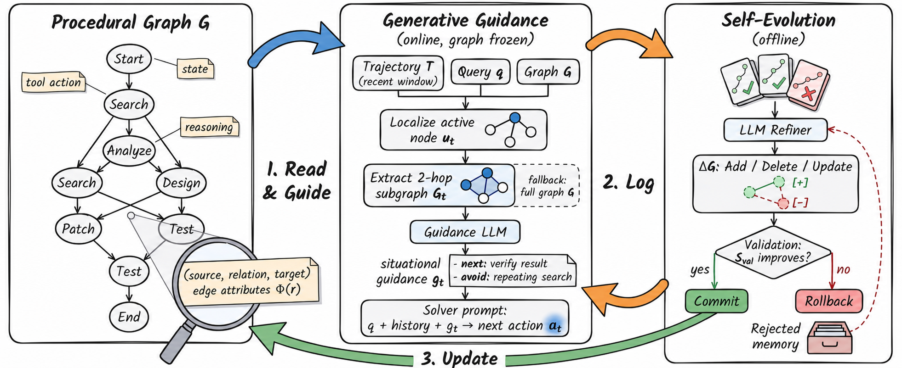

Knowing
what to do.
LLM agents store facts. We give them a living map of procedures: where they are, what comes next, and how to improve after failure.
A graph that reads,
guides, and rewrites itself.
Structure lives outside model weights—inspectable at inference time and editable after deployment.

Consistent gains,
across models and tasks.
All methods share the same ReAct solver. Select a model and benchmark to inspect point estimates from the main evaluation.
+1.3 pts over the strongest baseline
Point estimates from one greedy-decoding run. The manuscript reports finite-test-set 95% intervals; they are not multi-seed variability.
Procedural Graph ranks first in 21 of 24 model–benchmark cells.
Planning through
the next crisis.
In a 132-month enterprise simulation with three hidden macroeconomic crises, graph guidance extends agent lifespan under every base model.
Failure becomes
a topological edit.
The refiner contrasts successful and failed traces, proposes graph mutations, and uses validation performance as the commit gate.
Without a graph, the solver relies on its full flat trajectory at every step.
Returned test survival after validation-gated evolution from a minimal skeleton.